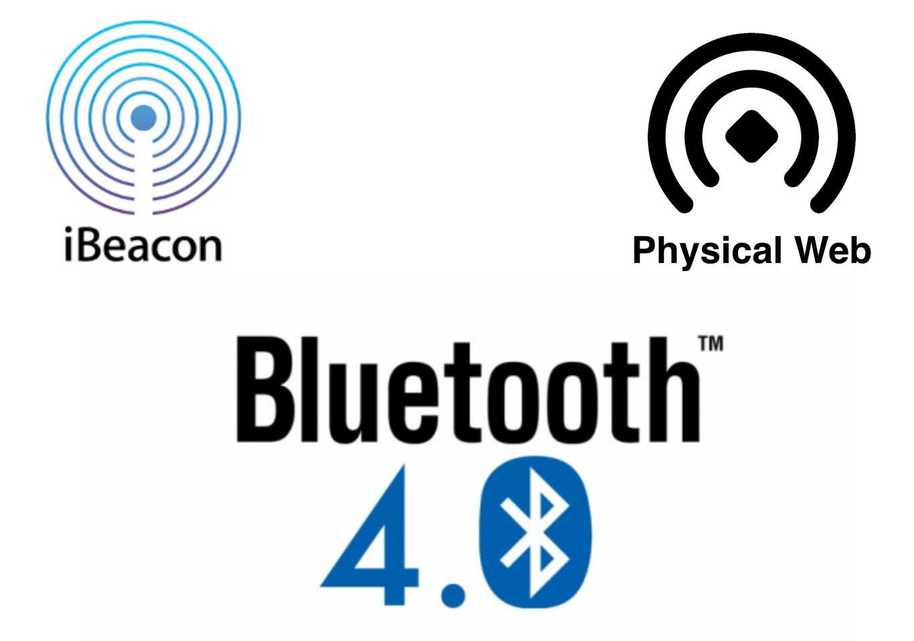
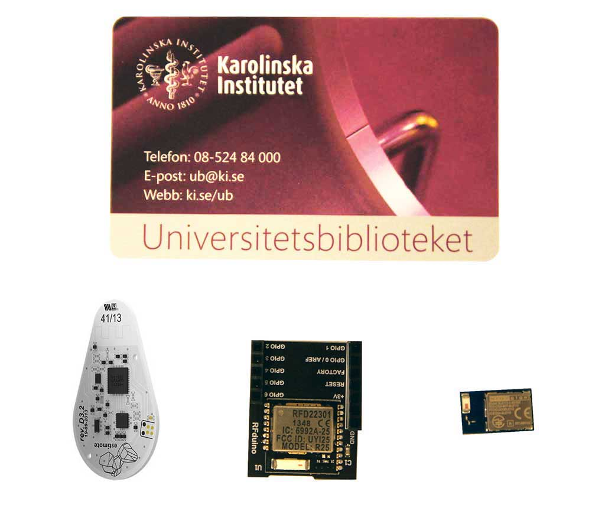
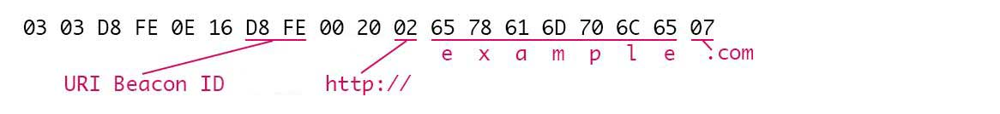
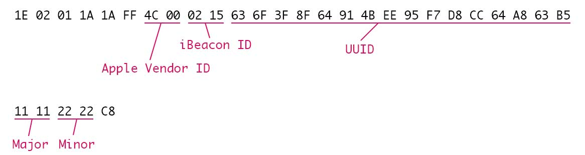
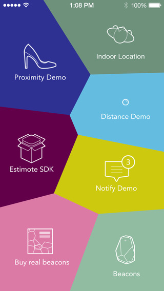

Fysisk webb
“Fånga upp och koppla ihop aktuella verksamheter på KIB och KI spegla dessa i såväl biblioteksrummet som på webben"

- "Beacons" baserade på Bluetooth Low Energy (BLE)
- Sänder "advertisements" via radiovågor
- Mellan 10-50 meters räckvidd
BLE peripheral

"Hej hej, här är jag"
Om iBeacons
- Ingår i iOS sedan iOS7 (kräver minst iPhone 4S, iPad 3)
- Signalerar till appar i bakgrunden
-
- Håller koll på avstånd och när du kommer och går. Upp till den lyssnande appen vad som ska hända.
- Sänder UUID + Major- + Minor-värde
-
- T ex: UUID för KIB (3A66FECC69CA43EA9DD12774795F6ACD), Major 01 för Solna, Minor 09 för skrivarrummet på plan 4.
Fördelar med iBeacons
- Inbyggt i iOS
- Lättillgänglig hårdvara
- Kontextuella appar
Nackdelar med iBeacons
- Endast för iOS (i teorin i alla fall)
- Kan användas för spårning
- Spam, "data rash"
Om Physical Web
- Skapat ur frustrationen över att behöva ha en app för allting
- Öppen standard för att ge URLer till fysiska objekt
- Kan vara:
-
- en webbsida med information om något
- webbapp för interaktion med något
- djuplänk in i en native app
- Nystartat och experimentellt
Fördelar med Physical Web
- Plattformsoberoende
- Inga proaktiva notifikationer
- URLar är flexibla
- Ingen spårning
- Utvecklas helt öppet, alla kan bidra
Nackdelar med Physical Web
- Experiment, publicerat 1 oktober 2014
- Kräver app i dagsläget
- Max 18 tecken för URL
Physical Web:

iBeacons:

Lekstuga!
Estimote iBeacons

iOS och Android
Beacons finns i rummet
Skattjakt med
Physical Web
- Hitta bokstäver
- Bilda ett ord
Telefoner finns att låna om din inte stöder BLE